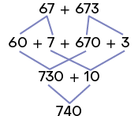
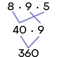
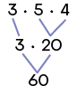
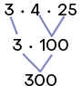
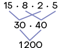

Página L
Resoluções
Unidade 1 Figuras geométricas espaciais
1. As embalagens que podem ser associadas aos poliedros são II e III. As embalagens que podem ser associadas aos não poliedros são I, IV e V.
2. Possível resposta: Todos eles são limitados apenas por retângulos.
3. Resposta pessoal. Possível resposta:
Caixa de bombons, caixa de sabão em pó, caixinha de suco, caixa de creme dental e caixa de leite longa vida.
4. a) Há 6 faces em um paralelepípedo retângulo.
b) Há 12 arestas em um paralelepípedo retângulo.
c) Há 8 vértices em um paralelepípedo retângulo.
5. As medidas das dimensões internas dessa caixa são de altura, de comprimento e de largura.
6. Analisando a planificação apresentada, percebemos que a face correspondente à letra B está logo abaixo da face correspondente à letra E. Desse modo, eliminamos a alternativa a. Além disso, na planificação, a face correspondente à letra F está logo abaixo da face correspondente à letra B, divergindo do que foi apresentado na alternativa b. Na construção do cubo a partir da planificação, percebe-se que a face correspondente à letra A ficará à esquerda da face correspondente à letra F, o que não ocorre no cubo apresentado na alternativa d. Portanto, a alternativa correta é a c.
7. A figura apresentada na alternativa b não pode ser a planificação de um paralelepípedo retângulo, pois apresenta apenas 5 faces. A figura apresentada na alternativa c também não pode ser a planificação de um paralelepípedo retângulo, pois, ao montarmos essa planificação, duas faces ficarão sobrepostas. Logo, a alternativa correta é a a.
8. a) 8 cubos apresentam três de suas faces compondo a superfície da pilha.
b) 1 cubo não apresenta faces compondo a superfície da pilha.
Matemática em destaque
9. a) Possíveis respostas: paralelepípedo retângulo ou bloco retangular.
b) Empilhamento cruzado, pois esse tipo de empilhamento garante maior estabilidade em relação ao empilhamento colunar, reduzindo o risco de queda das caixas.
c) Resposta pessoal. Espera-se que os estudantes respondam que utilizar formatos geométricos que não se assemelham a poliedros poderiam dificultar o encaixe das caixas no empilhamento. Além disso, é provável que sobrem espaços entre as caixas, aumentando, assim, o espaço usado e, consequentemente, o custo de transporte e de armazenamento.
10. As imagens que podem ser associadas aos prismas estão apresentadas nos itens a, b e d. A imagem que pode ser associada à pirâmide está apresentada no item c.
11. Associando cada poliedro a sua planificação, obtemos: a-IV; b-I; c-II; d-III.
12. a) Poliedros que são prismas: II e III.
Poliedros que são pirâmides: I e IV.
b) O prisma que tem base triangular é o apresentado no item II. A pirâmide que tem base triangular é a apresentada no item I.
c) Resposta pessoal. Espera-se que os estudantes digam que uma semelhança é que ambos são poliedros e uma diferença é que os prismas têm duas faces denominadas bases e as demais são faces laterais, enquanto as pirâmides têm uma face denominada base e as demais são faces laterais.
13. a) Resolução no final da seção Resoluções.
b ) I ) Resposta pessoal. Espera-se que os estudantes digam que a quantidade de faces é igual à quantidade de lados do polígono da base mais um.
II) Resposta pessoal. Espera-se que os estudantes digam que a quantidade de arestas é igual ao dobro da quantidade de lados do polígono da base.
III) Resposta pessoal. Espera-se que os estudantes digam que a quantidade de vértices é igual à quantidade de lados do polígono da base mais um.
6 faces, 10 arestas e 6 vértices
c) Resolução no final da seção Resoluções.
d ) I) Resposta pessoal. Espera-se que os estudantes digam que a quantidade de faces é igual à quantidade de lados do polígono da base mais dois.
II) Resposta pessoal. Espera-se que os estudantes digam que a quantidade de arestas é igual ao triplo da quantidade de lados do polígono da base.
III) Resposta pessoal. Espera-se que os estudantes digam que a quantidade de vértices é igual ao dobro da quantidade de lados do polígono da base.
6 faces, 12 arestas e 8 vértices
14. A resposta depende do prisma escolhido pelo estudante. Possivelmente, os resultados vão coincidir.
15. a) O modelo de contêiner que pode ser associado a um prisma é o contêiner comum. O prisma recebe o nome de paralelepípedo retângulo.
b) Aparecem 10 contêineres na fotografia da construção.
c) Resposta pessoal. Espera-se que os estudantes concluam que a reutilização de contêineres reduz o custo da construção, evita o descarte inapropriado do metal usado em sua fabricação, entre outras vantagens.
Página LI
16. a) O elemento da imagem assemelha-se a um cone.
b) O elemento da imagem assemelha-se a uma esfera.
c) Os elementos da imagem assemelham-se a um cilindro.
d) Os elementos da imagem assemelham-se a um cone.
17. Resposta pessoal. Possível resposta:
Bola de futebol, bola de tênis de mesa, bola de boliche, globo terrestre, bolinha de gude.
18. a) A peça B, pois sua superfície não tem partes arredondadas.
b) A peça D, pois sua superfície não tem parte plana.
c) Resposta pessoal. Espera-se que os estudantes realizem uma experiência como a apresentada e tirem suas conclusões.
Um pouco mais
1. a) A figura geométrica apresentada é um não poliedro.
b) A figura geométrica apresentada é um poliedro.
c) A figura geométrica apresentada é um poliedro.
d) A figura geométrica apresentada é um não poliedro.
2. a) A partir da planificação, é possível construir um paralelepípedo retângulo.
b) A partir da planificação, é possível construir uma pirâmide de base triangular.
c) A partir da planificação, é possível construir um prisma de base hexagonal.
d) A partir da planificação, é possível construir um cilindro.
Encerrando a unidade
1. Nesta unidade, foi abordado o conteúdo referente às figuras geométricas espaciais.
2. Resposta pessoal. Espera-se que os estudantes digam que conhecem figuras geométricas como poliedro, prisma, cubo, paralelepípedo retângulo, cone, cilindro e esfera.
3. Resposta pessoal. Possível resposta:
Esfera: uma bola de futebol; cilindro: uma latinha de suco; prisma de base retangular: uma caixa de sapatos; cone: uma casquinha de sorvete; pirâmide de base retangular: uma barraca.
4. Resposta pessoal. Possível resposta:
Para facilitar o acondicionamento.
5. Figuras com essas características são chamadas de poliedros.
6. Resposta pessoal. Possível resposta:
Podemos citar como semelhança o fato de o cilindro e o cone serem não poliedros e uma das suas diferenças é que o cone tem um vértice, já o cilindro não tem vértices.
Unidade 2 Os números naturais
1. Esta atividade permite várias respostas. Apresentamos algumas delas para cada item.
a) Ao citar a idade ou ao registrar a quantidade de pontos ganhos em um jogo.
b) Ao citar a medida da massa de um produto ou de uma pessoa, a medida da altura de uma pessoa ou de uma construção, ou a medida da velocidade em que um veículo se desloca.
c) Ao ler a placa de um automóvel ou ao digitar o número de um telefone.
d) Ao citar o ano em que um estudante estudou na escola, ao definir a premiação de um sorteio.
2. a) No outdoor e no pôster com promoção.
b) No termômetro e no relógio.
c) No número da loja e na placa do carro.
d) No pôster do filme.
3. O número que Danilo está dizendo representa um código.
4. a) Os números da coluna "Posição" indicam ordem.
b) A 2ª posição é ocupada pela Região Nordeste. Essa região tinha 57.667.842 habitantes em julho de 2021.
c) A resposta deste item depende da região onde o estudante mora.
5. Utilizando a notação atual, temos:
a) 329
b) 5.240
c) 253.104
d) 2.130.402
6. As respostas para esta atividade variam de acordo com as características apresentadas pelos estudantes.
7. a)
b) No sistema de numeração egípcio, não há símbolo para representar o zero.
8. 400.000 bois, 1.422.000 cabras e 120.000 prisioneiros
9. Representação da conquista de 15.000 cavalos:
Representação da conquista de 217.000 camelos:
10. Um único número. Porque, no sistema de numeração egípcio, a ordem não influencia a representação dos números. Logo, independentemente da ordem em que as fichas são dispostas, o número representado será o mesmo.
11. Utilizando a notação atual, temos:
a) 27
b) 184
c) 809
d) 3.474
12. Bruno: Estou lendo o capítulo XII de um livro. Maria: Cristóvão Colombo chegou às Américas no final do século XV.
Página LII
13. Sim. Porque um símbolo de menor valor posicionado à esquerda de um de maior valor representa a diferença entre eles.
14. egípcio: , , , ; romano: , , ,
a) Resposta pessoal. Espera-se que os estudantes percebam que os números são representados utilizando os mesmos símbolos, diferenciando-se apenas na quantidade e na ordem em que aparecem.
b) Resposta pessoal. Espera-se que os estudantes digam que sim, pois, em relação ao sistema de numeração egípcio, o romano, de maneira geral, permite a representação dos números com base em uma quantidade menor de símbolos.
15. a) Instituzioni Analitiche
b) 1748
c) (MDCCXVIII-MDCCXCIX)
d) Resposta pessoal. Espera-se que os estudantes compartilhem suas opiniões.
e) Resposta pessoal. Espera-se que os estudantes comentem e compartilhem entre si e com o professor suas opiniões.
16. Utilizando o sistema de numeração romano, temos: 609: DCIX; 2.010: MMX; Não há símbolos no sistema de numeração romano para o zero.
17. Representando com algarismos, temos:
A: 347; B: 6.003; C: 3.902
O número no qual o algarismo 3 tem valor posicional 300 está representado no item A.
18. a) 3 e 0 (zero)
b) 38.520
c) O maior número é 38.520 e o menor número é 30.852
19. a) sistema de numeração egípcio
b) sistema de numeração decimal
c) 0 (zero)
20. a) trezentos mil; 6 ordens
b) trezentos e oitenta e quatro mil e quatrocentos; 6 ordens
21. a) 98.654.320
b) 2.034.568; dois milhões, trinta e quatro mil, quinhentos e sessenta e oito
22. 4.728
a) O número 4.728 pode ser decomposto de várias maneiras. Apresentamos a seguir duas delas.
b) 4 unidades de milhar; 47 centenas; 472 dezenas; 4.728 unidades
23. A resposta para esta atividade depende das informações apresentadas pelos estudantes no recibo elaborado no caderno.
24. a) Resolução no final da seção Resoluções.
b) 1.400.000.000
c) Entre os planetas apresentados, o planeta Terra é mais próximo do Sol. O planeta mais distante do Sol entre os planetas apresentados é Saturno.
25. O antecessor e o sucessor de cada número em cada item:
a) 388 e 390
b) 1.470 e 1.472
c) 99.938 e 99.940
d) 999.999 e 1.000.001
26. Escrevendo os números em ordem crescente e decrescente, respectivamente, temos:
a)
b)
27. Não, pois é o último algarismo que define se um número é par ou ímpar e, nesse caso, esse algarismo está oculto.
28. a) Os Jogos Olímpicos de Sydney foram realizados em 2000. Os Jogos Olímpicos de Atlanta foram realizados em 1996.
b) Não; Sim.
29. a) O antecessor de 45 é o 44.
b) Porque o zero é o único número natural que não tem antecessor.
c) Possível resposta: Escolheriam um número natural qualquer, adicionariam 1 ao número escolhido e, por fim, obteriam seu sucessor natural.
- 1º. Número natural.
- 2º. Adiciono 1.
- 3º. Obtenho o sucessor do número escolhido.
d)
- 1º. Número natural.
- 2º. Adiciono 1 e multiplico por 2.
- 3º. Obtenho o dobro do sucessor do número escolhido.
30. Entre as informações apresentadas, a medida do comprimento de um lápis só pode ser . A medida da massa de um elefante, entre as informações apresentadas, só pode ser . Certas espécies de tartaruga chegam a viver, de acordo com as informações, 150 anos.
31. a) Os números naturais de dois algarismos maiores do que 93 são: 94, 95, 96, 97, 98 e 99.
b) Os números naturais de três algarismos menores do que 105 são: 100, 101, 102, 103 e 104.
c) O menor número natural de cinco algarismos é o 10.000.
32. a) Se mantida a regularidade, serão necessários 10 cubos para construir a pilha 4, ou seja, os 6 da anterior, mais 4 da fileira da "base".
Página LIII
b) Sim, pois, de acordo com a regularidade da sequência, a pilha 5 terá 15 cubos.
33. a) 9 estudantes
b) Heloísa: 6; Juliana: 5; Gilberto: 2; Fernanda: 4
c) Camila, Daniel, Gilberto, Isadora, Fernanda, Juliana, Heloísa, Ana e Beto
34. O personagem da esquerda ganhou porque escolheu par, e a soma da quantidade de olhos foi 6, que é um número par.
35. a) Resposta pessoal. Espera-se que os estudantes respondam que, primeiro, escreveriam um número e, depois, dividiriam esse número por 2. Se o resto da divisão fosse igual a zero, concluiriam que o número é par.
b) Resolução no final da seção Resoluções.
36. Daiane: 11; Murilo: 28
37. ![Imagem de um quadro com quatro colunas e quatro linhas, sendo que em cada um dos espaços há um algarismo. Primeira linha: 2, 1, 3 e 4. Segunda linha: 4, 3, 1 e 2. Terceira linha: 1, 4, 2 e 3. Quarta linha: 3, 2, 4 e 1. Além disso, esse quadro está dividido em quatro quadrados, sendo cada um de uma cor. Da esquerda para direita, as duas primeiras linhas referentes às duas primeiras colunas formam um quadrado que está na cor alaranjada. As duas primeiras linhas referentes a terceira e quarta coluna formam outro quadrado e está em cor amarela. As duas últimas linhas referentes a primeira e a segunda coluna formam um terceiro quadrado em cor verde. E as duas últimas linhas referentes a terceira e quarta coluna formam o último quadrado, em cor azul.](../resources/images/resolucao/g24_6sam_w079190Wq_prof.png)
38. a) O maior número é 7.089. O menor número é 7.
b) Os números que têm o algarismo 7 com valor posicional 70 são: 71, 273 e 2.079.
c) Os números que estão entre 1.500 e 2.500 são o 1.795 e o 2.079.
39. 16 quadradinhos; 25 quadradinhos
40. a) A resposta depende da quantidade de estudantes presentes na sala de aula.
b)Resposta pessoal. Espera-se que os estudantes citem, por exemplo, o sistema de numeração egípcio, romano e decimal, além da Língua Brasileira de Sinais (Libras).
Em ação
1. Possível resposta: A família poderá se endividar. Com o auxílio do controle financeiro, é possível saber quanto se ganha e quanto se pode gastar, quais são as principais despesas e onde se pode economizar, caso seja necessário. Além disso, é possível prever os gastos para evitar ultrapassar o valor que se ganha.
2. Resposta pessoal. Espera-se que os estudantes respondam "lazer", pois, entre as despesas apresentadas, esta é a menos essencial.
3. Resposta pessoal.
4. Despesa que corresponde ao maior gasto: lanche. Despesa que corresponde ao menor gasto: cinema.
5. Resposta pessoal.
Um pouco mais
1. A: medida; B: código; C: quantidade; D: ordem
2. Utilizando o sistema de numeração decimal, temos:
a) 3.241
b) 41.023
c) 1.246.201
d) 30.013
3. Escrevendo em ordem decrescente, temos:
MMDCLXIX, MMCDXCVI, MCMXXX, MDCCI, MCXLIX, CMXCIV, DCXXXVII e CDLXXII
4. Utilizando o sistema de numeração romano, temos:
a)CXXIV
b)XXXII
c)MMCCCXLI
5. Utilizando algarismos e escrevendo por extenso, temos:
a) 498; quatrocentos e noventa e oito
b) 607; seiscentos e sete
c) 6.823; seis mil oitocentos e vinte e três
6. a) Regra: cada número seguinte, a partir do segundo, é igual ao anterior com a adição de cinco unidades.
b) Resolução no final da seção Resoluções.
7. Associando os números, temos: 3.256: I, II, III, V e VI; 6.818: I, II, V e VI; 10.477: II, IV e V; 901: II, III e IV; 9.185: I, II, III, IV e V.
8. a) Considerando os itens da atividade anterior, temos o item II como verdadeiro para todos os números apresentados.
b) IV e VI; Possível resposta: Porque se um número é par, então seu sucessor é ímpar.
9. a) Resposta: 7.638: sete mil, seiscentos e trinta e oito; 6.783: seis mil, setecentos e oitenta e três; 8.367: oito mil, trezentos e sessenta e sete; 3.876: três mil, oitocentos e setenta e seis
b) 7.368: valor posicional 8; 6.783: valor posicional 80; 8.367: valor posicional 8.000; 3.876: valor posicional 800
c) 4 ordens
d)
10.
| Algarismo do número 11.034 | 1 | 1 | 0 | 3 | 4 |
|---|---|---|---|---|---|
| Valor posicional | 10.000 | 1.000 | 0 | 30 | 4 |
Encerrando a unidade
1. Sistemas de numeração egípcio, romano e decimal e números naturais.
2. Resposta pessoal. Espera-se que os estudantes citem os sistemas de numeração egípcio, romano e decimal.
3. Resposta pessoal. Possíveis respostas: quantidade: 12 laranjas, código: o número da minha casa é 140, ordem: 1º colocado, medida: 10 centímetros.
Página LIV
4. Resposta pessoal. Espera-se que os estudantes digam que o sistema de numeração decimal é o mais prático em relação aos outros sistemas, pois é possível verificar algumas vantagens na escrita e no reconhecimento dos números. Por exemplo, com os dez algarismos do sistema de numeração decimal, é possível escrever qualquer número sem a necessidade de criar novos símbolos ou repetir o mesmo símbolo várias vezes até obter o número desejado.
5. Resposta pessoal. Espera-se que os estudantes digam que é importante reconhecer e entender o que os números representam para compreender e resolver determinadas situações da vida cotidiana, para entender um conceito matemático e para representar quantidades, códigos, ordens e medidas.
Unidade 3 Operações com números naturais
1. a)
b)
c)
d)
2. a)
As regiões Nordeste e Sul têm, juntas, 2.987 municípios.
b)
As regiões Norte e Sudeste têm, juntas, 2.118 municípios.
c)
As cinco regiões brasileiras têm, juntas, 5.572 municípios.
3. a)
Portanto, Marina tem R$ 300,00 e Gustavo, R$ 250,00.
b)
Se Marina e Gustavo tivessem R$ 290,00 cada um, os dois teriam, juntos, R$ 580,00.
c) Resposta pessoal. Sugestão de questão:
Marina e Gustavo estão guardando dinheiro para comprar um presente. Juntos, eles têm R$ 550,00, sendo que Marina tem R$ 80,00 a mais que Gustavo. Quantos reais Marina tem?
;
Portanto, Marina tem R$ 315,00 e Gustavo, R$ 235,00.
4. Resposta pessoal. Sugestão de problema:
Juntos, Bruno e João têm 246 figurinhas, sendo que João tem 40 figurinhas a mais do que Bruno. Qual é a quantidade de figurinhas de cada um deles?
Resposta: Bruno tem 103 figurinhas e João tem 143 figurinhas
5. Os números consecutivos são: 999, 1.000, 1.001, 1.002.
Efetuando a adição desses números, temos:
.
Portanto, a soma dos números escritos por Luíza é 4.002.
6. A ficha do item a apresenta a adição . Ao invertermos a ordem dessas parcelas, obtemos , que é a adição indicada na ficha do item II. Do mesmo modo, a ficha do item b apresenta a adição . Ao trocarmos a ordem dessas parcelas, obtemos a adição , indicada na ficha do item III. Por fim, ao invertermos a ordem das parcelas da adição indicada na ficha do item c , obtemos a operação indicada na ficha do item I . Portanto, a-II, b-III, c-I.
Resposta pessoal. Espera-se que os estudantes respondam que utilizaram a propriedade comutativa da adição.
7. a)
b)
c)
d)
e)
f)
8. Resposta pessoal. Espera-se que os estudantes respondam que representariam inicialmente o número 156 no soroban e, depois, adicionariam 121. O resultado é 277.
9. a) Resposta pessoal. Possível resposta:
A primeira maneira é a mais simples pelo fato de associar dois números cuja soma é um múltiplo de 10, nesse caso, .
b) • Felipe:
Iara:
Jorge:
10. De acordo com a estratégia de cálculo mental apresentada na atividade, é provável que os estudantes procedam da maneira apresentada a seguir.
a) 
Página LV
Uma pessoa que comprar um cartucho para impressora e um escâner vai gastar R$ 740,00.
b) ![Imagem de um esquema. Na primeira linha, 58 mais 67 mais 673. Na segunda linha, 50 mais 8 mais 60 mais 7 mais 670 mais 3. O 58 aponta para 50 mais 8; o 67 aponta para 60 mais 7; e o 673 aponta para 670 mais 3. Na terceira linha, 110 mais 8 mais 10 mais 670. Os números 50 e 60 da segunda linha apontam para o 110; o número 8 da segunda linha aponta para o número 8 da terceira linha; e os números 7 e 3 da segunda linha apontam para o número 670 da terceira linha. Na quarta linha, 118 mais 680. Os números 110 e 8 da terceira linha apontam para 118; e os números 10 e 670 da terceira linha apontam para 680. E a quarta linha aponta para a última linda, onde há o número 798.](../resources/images/resolucao/g24_6sam_j310748Qj_prof.png)
Uma pessoa que comprar um teclado, um cartucho para impressora e um escâner vai gastar R$ 798,00.
c) ![Imagem de um esquema. Na primeira linha, 75 mais 673 mais 32. Na segunda linha, 70 mais 5 mais 670 mais 3 mais 32. O 75 aponta para 70 mais 5; 673 aponta para 670 mais 3; e o 32 aponta para o 32 da segunda linha. Terceira linha, 740 mais 8 mais 32. Os números 70 e 670 apontam para 740; os números 5 e 3 apontam para o número 8; e o 32 aponta para o 32 da terceira linha. Quarta linha, 740 mais 40. O 740 da terceira linha aponta para o 740 da quarta linha; e 8 mais 32 aponta para o 40. E a quarta linha aponta para última linha, onde está o número 780.](../resources/images/resolucao/g24_6sam_x804332Vd_prof.png)
Uma pessoa que comprar um roteador, um escâner e um mouse óptico vai gastar R$ 780,00.
d) ![Imagem de um esquema. Na primeira linha, 58 mais 32 mais 67 mais 75. Na segunda linha, 50 mais 8 mais 30 mais 2 mais 60 mais 7 mais 70 mais 5. Há 4 elementos da primeira linha que apontam para a segunda linha, eles são: 58 aponta para 50 mais 8; 32 aponta para 30 mais 2; 67 aponta para 60 mais 7; e 75 aponta 70 mais 5. Na terceira linha, 80 mais 10 mais 130 mais 12. Há 4 elementos da segunda linha que apontam para a terceira linha, eles são: 50 mais 30 apontam para 80; 8 mais 2 apontam para 10; 60 mais 70 apontam para 130; e 7 mais 5 apontam para 12. Na quarta linha, 90 mais 142. Há 2 elementos da primeira linha que apontam para a segunda linha, eles são: 80 mais 10 aponta para 90; e 130 mais 12 aponta para 142. E a quarta linha aponta para última linha, onde há o número 232.](../resources/images/resolucao/g24_6sam_u156539Bp_prof.png)
Uma pessoa que comprar um teclado, um mouse óptico, um cartucho para impressora e um roteador vai gastar R$ 232,00.
11. a) Arredondando a quantidade de água contida em cada um dos recipientes à dezena mais próxima, obtemos:
1 )
2 )
3 )
4 )
A quantidade de água aproximada obtida em todas as possibilidades de adição de dois desses recipientes é dada nos cálculos a seguir.
1 e 2: , pois .
1 e 3: , pois .
1 e 4: , pois .
2 e 3: , pois .
2 e 4: , pois .
3 e 4: , pois .
b) De acordo com os resultados obtidos no item a, os pares de recipientes que podem ter a água completamente despejada em uma jarra cuja medida da capacidade é , sem que ela transborde, são 1 e 4, 2 e 4, 3 e 4.
c) 1 e 2: vai transbordar, pois e .
1 e 3: vai transbordar, pois e .
1 e 4: vai transbordar, pois e .
2 e 3: vai transbordar, pois e .
2 e 4: não vai transbordar, pois e .
3 e 4: não vai transbordar, pois e .
Portanto, os recipientes 2 e 4 ou 3 e 4 podem ter a água despejada na jarra.
12. a)
b)
c)
d)
13. a)
b)
c)
d)
14. a)
Para atender à necessidade estimada, faltaram ser realizados 11.786 transplantes de córnea.
b)
Para atender à necessidade estimada, faltaram ser realizados 7.804 transplantes de rim.
c)
Para atender à necessidade estimada, faltaram ser realizados 1.616 transplantes de pulmão.
15. a) Efetuando a subtração dos valores indicados no hodômetro no momento da chegada a Salvador e no momento da partida em Campo Grande, temos:
Portanto, foi percorrida na viagem uma medida de distância de .
b) A maior medida da distância que esse hodômetro pode registrar é 999.999.
16. a)
A expectativa de vida do brasileiro passou de 53 anos para 77 anos após 60 anos.
b)
De 1960 a 1980, a expectativa de vida do brasileiro aumentou 10 anos.
c) Resposta pessoal. Possíveis respostas:
O crescimento econômico do país, o acesso à água tratada e à rede de esgoto, a disponibilidade de vacinas.
17. De acordo com a estratégia apresentada na atividade, é provável que os estudantes utilizem o procedimento de cálculo mental descrito a seguir.
a)
b)
c)
d)
Página LVI
e)
f)
18. a)
Faltam R$ 281,00 para Débora completar a quantia necessária para comprar o televisor à vista.
b) Resposta pessoal.
19. a) A menor medida de temperatura foi registrada no dia 20/01. A maior medida de temperatura foi registrada no dia 17/01.
b) 17/01:
18/01:
19/01:
20/01:
Portanto, a menor variação na medida de temperatura foi registrada no dia 18/01. Essa variação foi de .
c) Resposta pessoal. Sugestão de pergunta:
Em quais dias foram registradas medidas de temperaturas máximas iguais?
Resposta: dias 19/01 e 20/01
20. a) , pois .
b) , pois .
c) , pois .
d) , pois .
21.
Portanto, Mário tinha inicialmente R$ 1.384,00.
22.
Portanto, ainda são necessários 317 pontos para Karina passar de fase.
23. a) ; ;
b) ; ;
c) ; ;
d) ; ;
24. Efetuando a operação inversa, temos .
Assim, , e .
Efetuando a operação inversa, temos .
Assim, , e .
25. a)
b)
c)
26. A quantia que Junior receberá de troco é dada pela expressão , ou seja, a alternativa correta é a alternativa c.
Portanto, Júnior vai receber R$ 16,00 de troco.
27. A resolução desta atividade envolve o uso da adição e da subtração como operações inversas.
A:
B:
C:
D:
E:
F:
G:
28. De acordo com a estratégia apresentada na atividade, é provável que os estudantes utilizem os procedimentos de decomposição e associação representados a seguir.
a)
b)
c)
d)
29. Resolução no final da seção Resoluções.
30. a) No dia 01/02, havia 1.837 frascos em estoque.
b) No dia 03/02, foram retirados 21 frascos do estoque. Nesse mesmo dia, foram incluídos 349 frascos no estoque.
c) •
No dia 04/02, o saldo em estoque era 2.098 frascos.
No dia 06/02, o saldo em estoque era 2.084 frascos.
31. a)
b)
c)
d)
32. a)
b)
c)
d)
e)
f)
33. a) Torneira do tipo B:
Torneira do tipo C:
Portanto, no período de uma semana, uma torneira do tipo B desperdiça e uma torneira do tipo C desperdiça .
b) De acordo com a ONU, uma pessoa precisa de, aproximadamente, de água por dia para atender às suas necessidades. Assim, 18 pessoas vão precisar de, aproximadamente, de água por dia, pois . Essa necessidade é maior do que a quantidade de água que uma torneira do tipo B desperdiça em um dia.
34. Esta atividade admite duas respostas em cada item. Apresentamos as duas possibilidades em cada um deles.
a) ou
b) ou
c) ou
d) ou
35. a) A quantidade de água despejada pela torneira é de por minuto. No período de , essa torneira vai despejar de água na piscina, pois . Como , no período de , essa torneira vai despejar de água na piscina, pois .
Portanto, foram despejados de água na piscina após e de água após .
Página LVII
b) . Após , foram despejados na piscina:
Portanto, a medida da capacidade dessa piscina é .
c) Resposta pessoal. Sugestão de questão:
Após quantos minutos uma torneira que despeja de água por minuto deve levar para encher uma piscina com capacidade para ?
Resposta: 48 minutos
36. I) Podemos escrever A2 como . O produto entre 2 e 4 é igual a 8. Desse modo, devemos encontrar um número A0 que, ao ser multiplicado por 4, resulte em 80, pois . Conclui-se que esse número é 2, pois . Portanto, .
II) O produto entre 56 e 7 é igual a 392. Então, .
III) Podemos escrever 3C como . O produto entre 30 e 9 é igual a 270. Desse modo, devemos encontrar um número C que, ao ser multiplicado por 9, resulte em 63, pois . Logo, concluímos que esse número é 7, pois . Portanto, .
37. a) A quantidade de linhas e colunas neste item é igual a 6 e 7, respectivamente. Logo, multiplicando a quantidade de linhas pela quantidade de colunas (ou vice-versa), temos: ou
Portanto, há 42 caixas representadas.
b) A quantidade de linhas e colunas neste item é igual a 5 e 6, respectivamente. Logo, multiplicando a quantidade de linhas pela quantidade de colunas (ou vice-versa), temos: ou
Portanto, há 30 caixas representadas.
38. Como as atletas podem escolher 3 opções de calção e 4 opções de camiseta, então a quantidade de combinações possíveis de serem formadas é igual a 12, pois .
39. a) Entre as opções de senhas disponíveis, aquelas cujo primeiro caractere é um número natural par menor do que 7, o segundo caractere é uma vogal e o terceiro caractere é um número natural ímpar menor do que 10 estão indicadas nos itens I, III e V.
b) A senha de acesso é formada por três caracteres. O primeiro deles deve ser formado por um número natural par menor do que 7. Nesse caso, os números que atendem a esse requisito são 0, 2, 4 e 6, ou seja, há 4 opções disponíveis. O segundo caractere deve ser uma vogal do nosso alfabeto, ou seja, as opções disponíveis são a, e, i, o e u, totalizando 5 opções. O terceiro caractere deve ser um número natural ímpar menor do que 10. Nesse caso, temos os números 1, 3, 5, 7 e 9, ou seja, 5 opções. Logo, a quantidade de maneiras diferentes para a composição de uma senha é representada por .
Portanto, Alberto pode compor a senha de 100 maneiras diferentes.
40. a)
b)
c)
d)
41. Para a resolução desta atividade, utilizaremos a propriedade do elemento neutro.
a)
b)
c)
d)
42. De acordo com a estratégia apresentada na atividade, é provável que os estudantes utilizem as seguintes associações no procedimento de cálculo mental.
a) 
b) 
c) 
d) 
43. O item a apresenta a multiplicação . Invertendo a ordem desses fatores, obtemos a multiplicação , indicada no item III. Do mesmo modo, o item b apresenta a multiplicação , que, ao invertermos a ordem dos fatores, pode ser escrita como , conforme o item II. O item c apresenta a multiplicação , ou , tal qual indicado no item IV. Por fim, a multiplicação indicada no item d também pode ser escrita como , apresentada no item I, ao invertermos a ordem de seus fatores. Portanto, a-III, b-II, c-IV, d-I.
Resposta pessoal. Espera-se que os estudantes digam que utilizaram a propriedade comutativa.
44. a) Sim, pois .
b) Mais próximo de , pois 46 está mais próximo de 50, e não de 40.
45. a) O valor de cada entrada arredondado para a dezena mais próxima corresponde a R$ 30,00. Como foram comprados 7 ingressos no total (Marcela mais 6 amigos), o valor aproximado gasto com os ingressos é representado por .
Portanto, Marcela gastaria R$ 210,00 com as entradas.
b) Sim; Espera-se que os estudantes respondam que, como o arredondamento foi feito para um valor maior, e R$ 210,00 é menor do que R$ 220,00, então certamente foi suficiente.
c) Não; Não; Espera-se que os estudantes respondam que, como o arredondamento foi feito para um valor menor, não podemos garantir que R$ 220,00 seriam suficientes para comprar todas as entradas.
46. a) A expressão que representa o valor total pago por Lucas, com os descontos, é:
Página LVIII
b)
O valor total pago por Lucas pelo eletrodoméstico foi R$ 1.038,00.
c) O valor total que Lucas pagaria pelo eletrodoméstico, sem os descontos, é representado por . Subtraindo esse valor do que foi pago, com desconto, obtemos .
Portanto, Lucas economizou R$ 72,00 pagando as parcelas antecipadamente.
47. O próximo termo é , pois cada termo da sequência foi obtido ao multiplicar o termo anterior por 3.
48. a) . Portanto, o quociente é 78 e o resto é 5.
b) . Portanto, o quociente é 65 e o resto é 4.
49. Afinador de instrumentos:
Pedal para guitarra:
O pedal para guitarra custa R$ 340,00. O afinador de instrumentos custa R$ 136,00.
50. a)
Caio:
Portanto, Caio obteve 120 pontos e Emília, 60 pontos.
b)
Diego:
Portanto, Diego fez 39 pontos e Tiago, 13 pontos.
51. Resposta pessoal. Sugestão de problema:
Sabendo que Vilma fez um terço de pontos de Ana e que a soma total dos pontos foi igual a 188, calcule a quantidade de pontos de cada uma delas.
Resposta: Vilma: 47 pontos, Ana: 141 pontos
52. a) Os dias da semana em que a quantidade de ligações esteve acima da média foram segunda-feira e sexta-feira.
b)
Portanto, o SAC dessa empresa recebeu, em média, 337 e-mails de segunda-feira até sexta-feira dessa semana.
c) Resposta pessoal.
53.
. Portanto, o resto é 0.
. Portanto, o resto é 1.
. Portanto, o resto é 2.
. Portanto, o resto é 3.
. Portanto, o resto é 0.
. Portanto, o resto é 1.
a) • . Portanto, o resto é 2.
. Portanto, o resto é 1.
. Portanto, o resto é 3.
. Portanto, o resto é 0.
. Portanto, o resto é 3.
. Portanto, o resto é 2.
b) Os possíveis restos da divisão de um número natural por 4 são 0, 1, 2 ou 3. Na divisão por 5, as possibilidades são 0, 1, 2, 3, ou 4.
54. a) Hélio está na 9ª fase, pois, na divisão de 570 por 65, obtemos quociente igual a 8 e resto igual a 50.
b)
Portanto, são necessários 15 pontos para Hélio alcançar a próxima fase.
c) ;
Portanto, para cumprir todas as fases, Hélio ainda precisa conquistar 600 pontos.
55. Nessa turma, havia 42 estudantes, pois, entre os números maiores do que 40 e menores do que 45, o único número divisível por 2 e por 3 ao mesmo tempo é o 42.
56. a) Arredondando 198 à centena mais próxima, obtemos 200.
b) Arredondando 4.016 à centena mais próxima, obtemos 4.000.
c) Arredondando 985 à centena mais próxima, obtemos 1.000.
d) Arredondando 1.980 à centena mais próxima, obtemos 2.000.
e) Arredondando 870 à centena mais próxima, obtemos 900.
f) Arredondando 1.632 à centena mais próxima, obtemos 1.600.
57. a) . Portanto, o quociente é 13 e o resto é 4.
b) . Portanto, o quociente é 24 e o resto é 23.
c) . Portanto, o quociente é 7 e o resto é 74.
d) . Portanto, o quociente é 19 e o resto é 30.
e) . Portanto, o quociente é 25 e o resto é 19.
f) . Portanto, o quociente é 16 e o resto é 56.
58. a) ; ;
b) ; ;
Página LIX
c) ; ;
d) ; ;
59. a)
b)
c)
d)
60. Para responder à pergunta feita por Tiago, fazemos a operação inversa da divisão: . Portanto, o avô de Tiago tem 78 anos.
Para responder à pergunta feita por Maria, fazemos a operação inversa da multiplicação: . Portanto, o número que Maria multiplicou por 19 é 43.
61. a)
b)
c)
d)
Matemática em destaque
62. a) O que impede é o dígito verificador, pois, se algum algarismo do código for digitado incorretamente, é provável que o resultado dos cálculos, obtido pelo sistema, não corresponda ao dígito verificador.
b) I) Código 890: Índia
II) Código 869: Turquia
III) Código 789: Brasil
c) A sequência de dígitos que identificam o fabricante do produto é composta pelos algarismos que ocupam as posições 4 a 7. Logo, os códigos de barras que identificam produtos que são do mesmo fabricante estão indicados nos itens I e IV, II e III.
d) I ) Resolução no final da seção Resoluções.
II ) Resolução no final da seção Resoluções.
e) Resposta pessoal. A resposta deste item depende do produto escolhido pelo estudante.
63. a)
b)
64. : ; : ; :
65. a) ;
Portanto, cada ingresso custou R$ 68,00.
b) Quantia a ser paga para Rafael:
Quantia a ser paga para Davi:
Portanto, Marcos deverá pagar R$ 14,00 para Rafael e R$ 54,00 para Davi.
66. Resposta pessoal. Sugestão de problema:
Matheus tinha 100 reais para dividir entre seus 3 filhos, mas precisou usar 40 reais antes de dividir com eles. Quantos reais cada filho recebeu?
Resposta: R$ 20,00
67. a) Representando a medida da massa de cada caixa amarela por um , temos .
b) Resolvendo a expressão obtida no item anterior, temos:
Portanto, a medida da massa de cada caixa amarela é igual a .
68. a) Seja Q a quantidade de laranjas, em quilograma, vendida no período da manhã. Então, a quantidade de laranjas vendida no período da tarde é igual a . Portanto, a igualdade que representa a quantidade de laranjas vendida nesse dia é .
b) Resolvendo a expressão obtida no item anterior, temos:
Assim, o feirante vendeu de laranja no período da manhã.
c) Resposta pessoal. Sugestões de situações:
Em um dia de trabalho, um feirante vendeu de laranja. No período da tarde, ele vendeu a mais do que no período da manhã.
Em um dia de trabalho, um feirante vendeu de laranja. No período da tarde, ele vendeu o dobro do que tinha vendido no período da manhã.
69. Sim, porque ao adicionar o mesmo número natural aos seus dois membros, ou ao dividir (exceto dividir por zero) os dois membros por um mesmo número natural, a igualdade não se altera.
a)
b)
c)